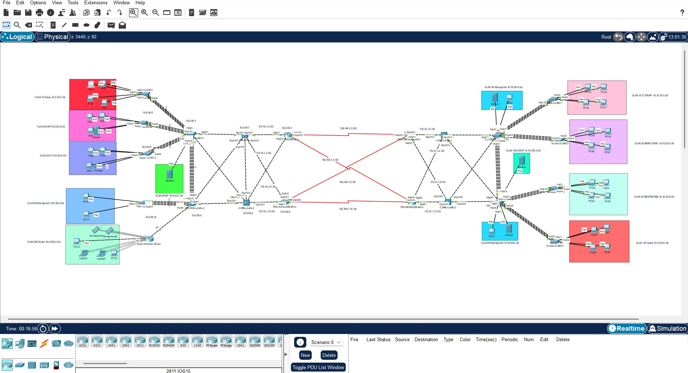
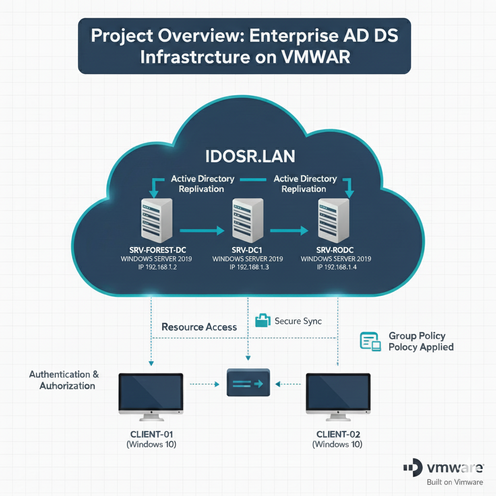
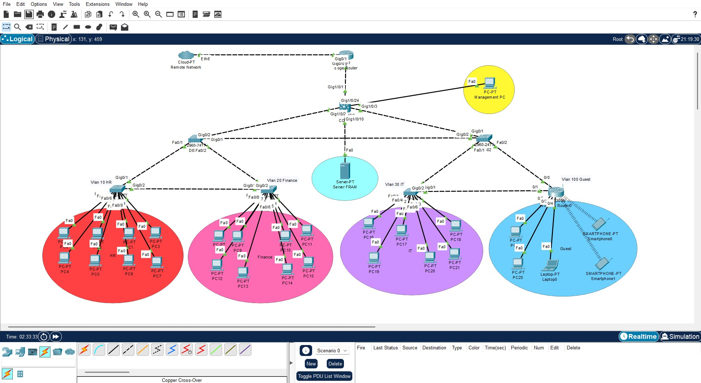

Technicien Spécialisé en Infrastructures Digitales, fraîchement diplômé. Stage SOC chez DXC Technology sur architecture Wazuh / OPNsense / Suricata / Shuffle. Créateur de SENTINEL, plateforme IA de sécurité réseau autonome.
Jeune diplômé en Infrastructures Digitales – Systèmes & Réseaux (ISTA Sala Al Jadida, 2024–2026), je recherche un poste en administration systèmes, réseaux ou cybersécurité.
Mon stage de fin d'études chez DXC Technology (Maroc Technopolis, Rabat) m'a permis de concevoir une architecture SOC complète — SIEM, SOAR, XDR, pare-feu et boucle IA — pour automatiser la détection et la réponse aux incidents.
En parallèle, je développe SENTINEL, mon projet de fin de formation : une plateforme de sécurité réseau autonome à 6 couches, déployée sur infrastructure physique réelle, combinant détection d'intrusions par Machine Learning, auto-remédiation et interface conversationnelle IA.
De l'administration de serveurs Windows à la corrélation d'alertes SIEM, en passant par l'automatisation réseau et les pipelines de Machine Learning.
Présenté comme un fil d'événements — du plus récent au plus ancien.
Conception et déploiement d'une architecture SOC complète — SIEM, SOAR, XDR, pare-feu, intelligence artificielle — visant à réduire le temps de détection et améliorer la prise de décision en cybersécurité. Corrélation d'événements (Wazuh), segmentation réseau (OPNsense), détection d'intrusions (Suricata), orchestration de réponse (Shuffle), gestion d'incidents (TheHive/Cortex) et threat intelligence (MISP, VirusTotal).
Production, mixage et mastering pour artistes Rap, Pop et Afro. Gestion du workflow audio complet, de l'enregistrement au mastering final, en garantissant une qualité sonore professionnelle.
Montage vidéo, sound design et préparation média au sein du studio de production universitaire. Contribution à des projets académiques et créatifs à fort niveau d'exigence audiovisuelle.
Chaque dossier reflète une infrastructure réellement déployée — labo physique, VM ou simulation professionnelle.
Plateforme de cybersécurité autonome conçue en équipe : détection d'intrusions, auto-remédiation et interface conversationnelle IA, déployée sur 3 serveurs Ubuntu (96 Go RAM cumulés) et équipements Cisco physiques. Pipeline 4 modèles (Random Forest → ONNX Runtime, Isolation Forest, Prophet, LLM local Ollama + Mistral 7B via RAG), remédiation automatisée par Nornir/Netmiko et règles nftables en moins de 40ms.

Routage OSPF/BGP, VLANs, STP/RSTP, EtherChannel et HSRP pour une infrastructure multi-sites haute disponibilité, avec AAA et accès SSH sécurisé.

Forêt AD, WDS pour déploiement PXE, autorité de certification interne (AD CS) et HTTPS/IIS pour sécuriser les services web internes.
Déploiement d'un environnement web IIS complet sécurisé par certificats SSL/TLS sur Windows Server, avec gestion du cycle de vie des certificats.

VLANs, DHCP/DNS, OSPF, NAT et ACL validés sur GNS3, EVE-NG et Packet Tracer pour simuler une architecture LAN d'entreprise.
Authentification réseau centralisée combinant Active Directory, serveur NPS/RADIUS et bornes TP-Link en 802.1X/WPA2-Enterprise — fin du PSK partagé.
Certifications Cisco obtenues entre avril 2025 et mars 2026.
Stage terminé, diplôme en poche — prêt pour un poste en systèmes, réseaux ou cybersécurité.